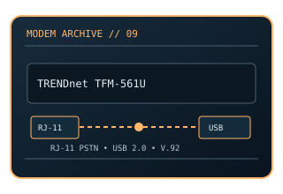

[ MODEL-SPECIFIC NETWORK HARDWARE ]
TRENDnet TFM-561U 56K V.92 USB Modem
External 56K V.92 USB modem with a single analog telephone-line jack. This static record documents the modem-side line technology separately from its host interface and provider-dependent service rate.

MODEL IDENTIFICATION: Match the exact model number and hardware revision on the device label. Similar names, regional SKUs and provider-branded variants may have different ports, firmware, modulation or driver support.
Exact specifications and compatibility
| Cataloged model | TRENDnet TFM-561U 56K V.92 USB Modem |
|---|---|
| Dedicated subcategory | Modems and line-termination devices |
| Modulation / line protocol | ITU-T V.92/V.90; V.34 fallback; RJ-11 PSTN input; V.92/V.90 downstream PCM modulation and V.34-family upstream modulation, falling back as line conditions require. |
| Line / physical interfaces | RJ-11 PSTN input; V.92/V.90 downstream PCM modulation and V.34-family upstream modulation, falling back as line conditions require. |
| Nominal data rate | Up to 56 kb/s downstream and up to 48 kb/s upstream under V.92 conditions; V.90 upstream is usually up to 33.6 kb/s. These are nominal protocol ceilings. |
| Bus / host interface | USB 2.0 host interface and RJ-11 analog line jack. |
| Operating-system compatibility | Uses a TRENDnet driver and OS dial-up networking support. Documentation/drivers target legacy Windows versions; check driver signing and 64-bit availability for the host before relying on it. Not a driverless Ethernet device. |
| Driver / firmware notes | Analog modem compatibility requires an actual analog/POTS-compatible path. VoIP adapters and digital phone systems may not pass modem tones reliably; V.92 features depend on the remote modem. |
| Wi-Fi / switching | No Wi-Fi access point or Ethernet switching function is cataloged for this modem. |
Model-specific notes
Analog modem compatibility requires an actual analog/POTS-compatible path. VoIP adapters and digital phone systems may not pass modem tones reliably; V.92 features depend on the remote modem. Nominal signaling rates are standards/model ceilings rather than specimen test results or a promise of ISP throughput.
Manufacturer, archive and standards references
- Internet Archive catalog copy of the TFM-561U driver discArchived model-specific guide or software documentation for identification and legacy host details.
- TRENDnet TFM-561U manufacturer product pageManufacturer source; confirm regional SKU, revision and present support status.
- ITU-T Recommendation V.92 — modem signalingStandards reference for the relevant line/modem signaling family; implementation and ISP profile remain model-specific.
Check manufacturer and provider support for the exact region, revision, line profile, firmware and host OS before deployment.